Córtex Estudos · 4º Semestre · Anatomia Topográfica · Aula 03
Dorso
Regiões, coluna vertebral, região suboccipital, manguito rotador, os grandes músculos extrínsecos e intrínsecos, a aponeurose toracolombar e os três trígonos (ausculta, Grynfeltt e Petit). A aula inteira gira em torno de uma lógica: entender POR QUE cada músculo faz o movimento que faz — o professor avisou que não cobra origem e inserção decoradas, cobra o raciocínio, a inervação e a vascularização.
1 · O dorso e suas regiões (e por que a semiologia precisa delas)
- O dorso é a face posterior do tronco, inferior ao pescoço e superior às nádegas — a região onde se fixam cabeça, pescoço e membros. Inclui pele, subcutâneo, músculos, coluna vertebral, costelas, medula espinal e meninges, e vasos/nervos segmentares.
- Três partes: região posterior do pescoço (NUCA), região posterior do tórax e região lombar.
- Na região posterior do tórax, o marco divisor é a escápula: região supraescapular (acima), escapular (sobre a escápula), infraescapular (abaixo) e interescápulo-vertebral (entre as duas escápulas). Depois vêm lombar (vai até a nádega), sacral e glútea.
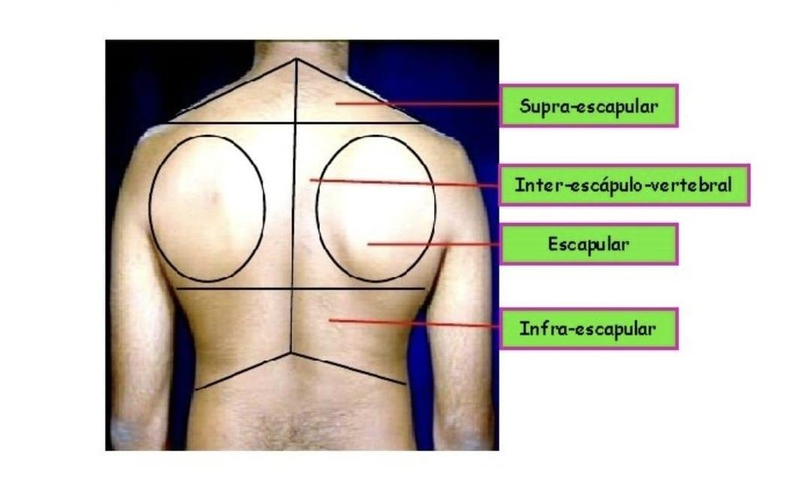
🎯 A facada que a escápula segura
O exemplo do professor: paciente esfaqueado no dorso. Na região escapular, a faca "certamente não entrou" — bate no osso da escápula. Mas na região infraescapular, "opa, pode ter entrado" — ali não há escudo ósseo. Saber nomear a região não é burocracia do prontuário: define a preocupação clínica. "Facada na bunda" não existe em prontuário — existe "ferimento penetrante em região glútea direita, próximo à linha mediana".
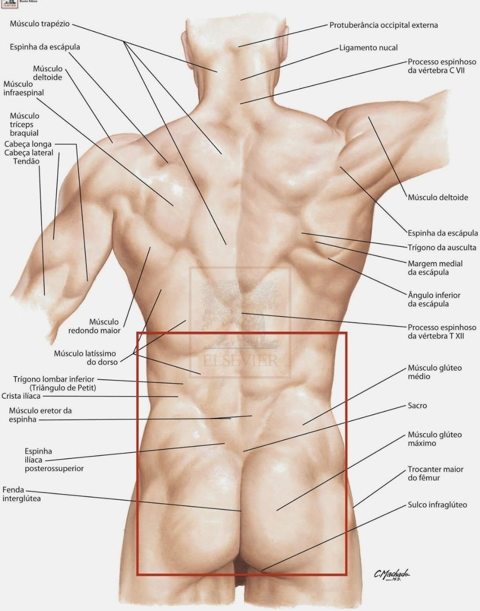
2 · Coluna vertebral: o eixo biomecânico
- 33 vértebras em 5 regiões: 7 cervicais · 12 torácicas · 5 lombares · 5 sacrais (fundidas no sacro) · 4 coccígeas (remanescentes de cauda). Mede 72–75 cm no adulto — praticamente metade da altura do corpo.
- Funções: protege a medula espinal e os nervos espinhais; sustenta o peso do corpo acima da pelve; é um eixo parcialmente rígido E flexível ("haste biomecânica"); base sobre a qual a cabeça gira; papel central em postura e locomoção.
- Movimentos do dorso: flexão (musculatura anterior contrai, a do dorso relaxa), extensão/hiperextensão (músculos posteriores), flexão lateral (contração unilateral) e rotação.
⚠️ Onde procurar hérnia de disco
A rotação (e o movimento em geral) concentra-se em dois segmentos: cervical e lombar — são os que mais se movem e, por isso, os que mais sofrem. Na ortopedia, hérnia de disco se procura no pescoço e na lombar; "no tórax certamente não vai ter" — a caixa torácica trava o segmento torácico.
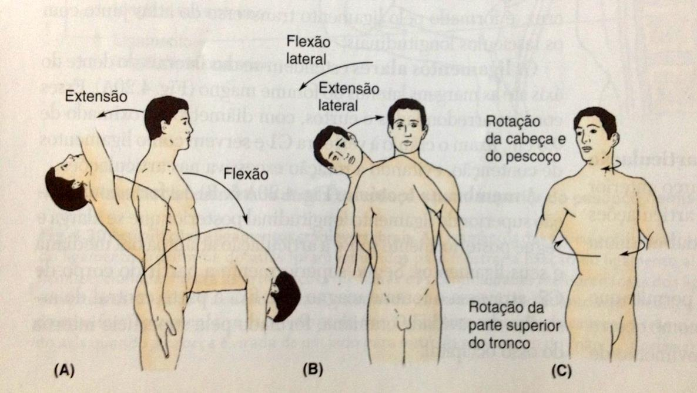
3 · Região suboccipital e o trígono suboccipital
- Compartimento muscular profundo da nuca, entre a base do crânio (occipital) e as vértebras C1–C2 — um espaço piramidal abaixo dos músculos esternocleidomastóideo, esplênio e semiespinal. Para vê-lo na dissecção, é preciso tirar trapézio → esplênio → semiespinal da frente.
- 4 pequenos músculos de cada lado, todos ligados a C1/C2: reto posterior menor da cabeça, reto posterior maior da cabeça, oblíquo superior da cabeça e oblíquo inferior da cabeça. Fazem o ajuste fino dos movimentos da cabeça sobre as duas primeiras vértebras.
🎯 O primeiro trígono da aula
Três desses músculos formam o TRÍGONO SUBOCCIPITAL: reto posterior maior + oblíquo superior + oblíquo inferior. E o conteúdo é o que importa: a ARTÉRIA VERTEBRAL e o NERVO SUBOCCIPITAL (que inerva os quatro músculos da região). A artéria vertebral sobe protegida dentro dos forames transversos das vértebras cervicais, passa por esse trígono e entra pelo forame magno — as duas vertebrais se unem formando a artéria BASILAR, que participa do polígono cerebral (de Willis). Ou seja: dentro desse triângulo de músculos minúsculos passa uma artéria que nutre o cérebro.
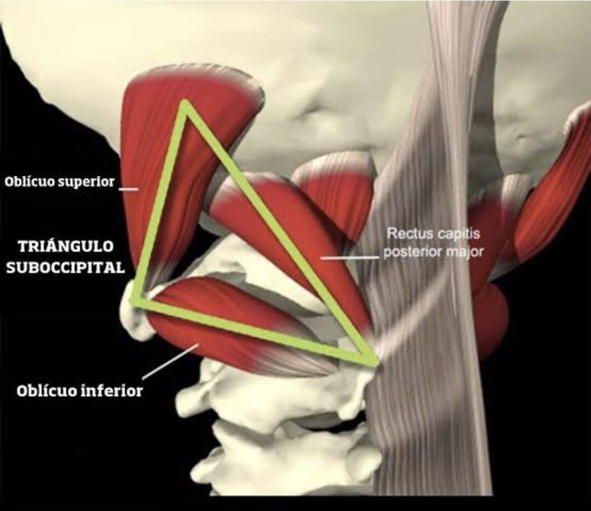
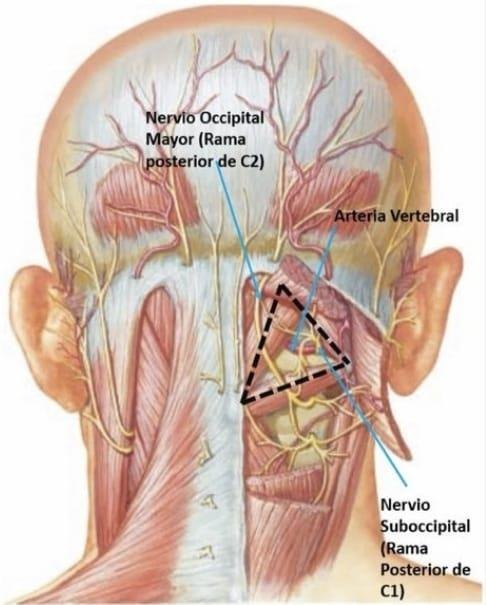
4 · Escápula, manguito rotador e o plexo braquial
- A escápula está NO dorso (temos até uma "região escapular"), mas seus músculos não movem a coluna — movem o ombro/membro superior. Não são músculos "próprios" do dorso.
- Manguito rotador = 4 músculos que nascem na escápula e se inserem no úmero: supraespinal, infraespinal e redondo menor por trás; subescapular (o "grandão" que forra a fossa subescapular) pela frente.
- Supraespinal: é ele que INICIA a abdução do braço — e é o que mais lesa (o desgaste clássico do tendão do manguito).
- Redondo maior NÃO é manguito — está ali do lado, vai direto ao úmero, mas fica fora do grupo.
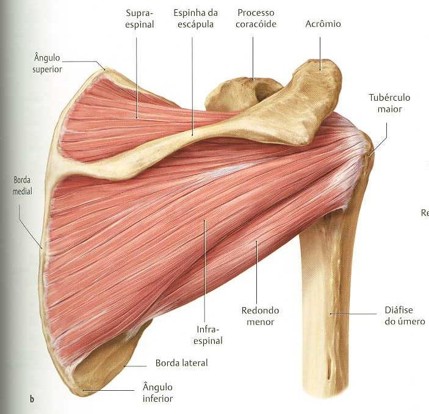
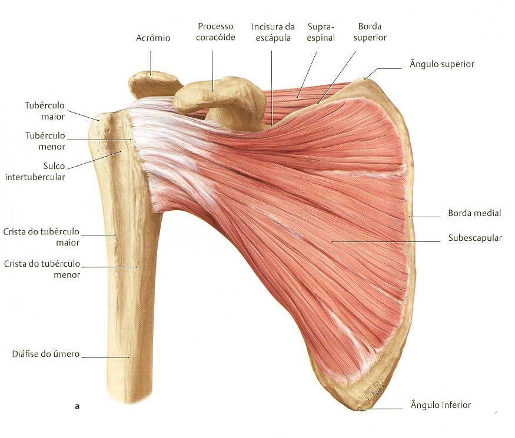
Quem inerva o manguito? O plexo braquial responde
- Revisão-relâmpago: o plexo braquial nasce das raízes C5–T1 → forma os troncos superior, médio e inferior → divisões → fascículos lateral, medial e posterior. Tudo que move o membro superior vem do plexo braquial.
- Nervo supraescapular (do tronco superior) → inerva supraespinal e infraespinal.
- Nervos subescapulares (do fascículo posterior) → inervam subescapular e redondo maior.
- Pergunta clássica de prova oral: "mostra o músculo, diz quem inerva e de onde vem o nervo" — treine exatamente essa tríade.
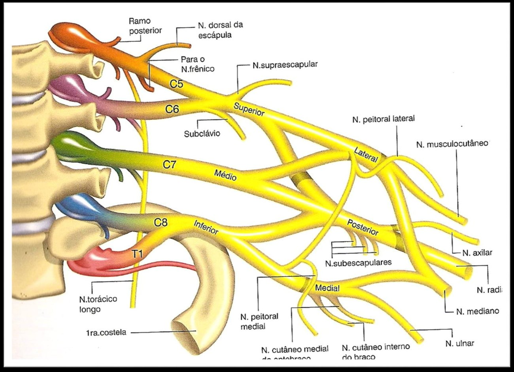
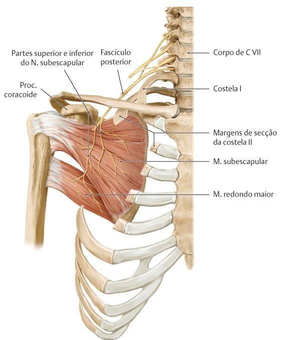
5 · Extrínsecos I: trapézio e o nervo acessório
A musculatura do dorso tem duas famílias: os EXTRÍNSECOS (superficiais/intermediários — movem membros e costelas, não a coluna) e os INTRÍNSECOS (profundos, "próprios do dorso" — movem a coluna e mantêm a postura). O professor deu a imagem: extrínsecos são os "guindastes" do membro; intrínsecos são os "cabos de tensão" que seguram o mastro ereto.
- Trapézio — o mais superficial. Origem no terço medial da linha nucal, protuberância occipital e processos espinhosos de C7 a T12; inserção no terço lateral da clavícula, acrômio e espinha da escápula.
- As partes se nomeiam tomando o OMBRO como referência: fibras que DESCEM para o ombro = parte descendente (elevam a escápula); fibras transversais = parte transversa (retraem); fibras que SOBEM ao ombro = parte ascendente (deprimem). Juntas, ainda rodam a escápula.
- A sequência da abdução completa do braço (trocar a lâmpada): supraespinal inicia → deltoide continua → trapézio termina, rodando a escápula para o braço passar da horizontal.
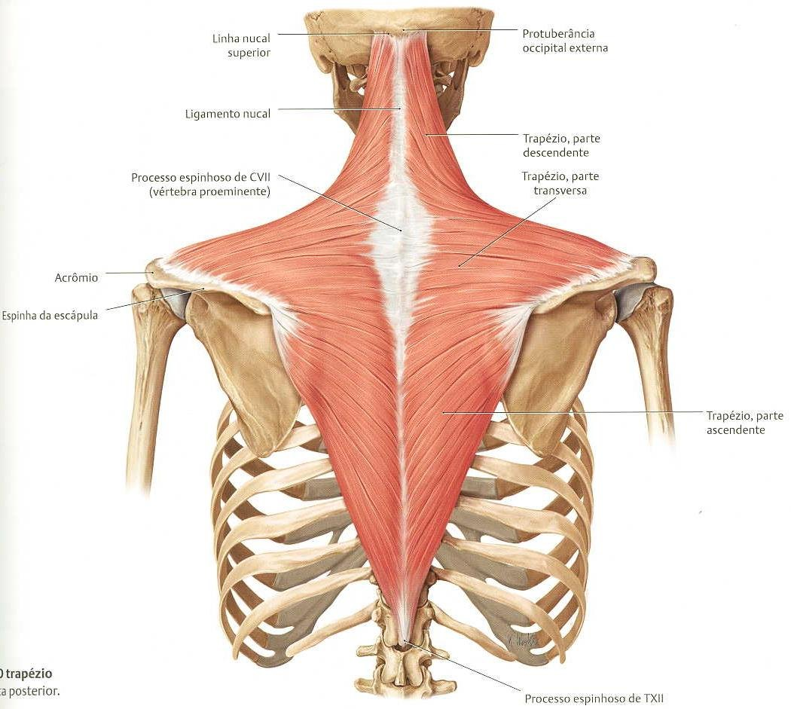
🎯 Inervação surpresa: nervo ACESSÓRIO (XI par craniano)
O trapézio move o membro, mas não vem do plexo braquial: é inervado pelo nervo acessório, o XI par craniano, que sai da base do crânio e desce pelo pescoço. Cirurgia de tumor cervical que sacrifica o acessório → trapézio íntegro porém desfuncionalizado → atrofia, dor e SÍNDROME DO OMBRO CAÍDO (não eleva o ombro/braço). A artéria é a dorsal da escápula (da cervical transversa/axilar). E a aplicação cirúrgica: o trapézio dá retalhos musculocutâneos pediculados para cobrir grandes ressecções cervicais — por isso preservar o pedículo importa.
6 · Extrínsecos II: latíssimo, romboides, levantador e serráteis
Latíssimo do dorso — o "grande avental"
- Antigo "grande dorsal". Origem nos processos espinhosos de T6–T12, fáscia toracolombar, crista ilíaca e 3–4 costelas inferiores; inserção no assoalho do sulco intertubercular do úmero.
- Ações: estende, ADUZ e roda medialmente o úmero; levanta o corpo na escalada. É a puxada da remada/barra — o trapézio joga o ombro, o latíssimo puxa.
- Inervação: nervo TORACODORSAL (do fascículo posterior, entre os dois subescapulares). Artéria e veia toracodorsais, ramos terminais da subescapular — que é o último ramo da axilar (continuação da subclávia).
🩺 O retalho que reconstrói a mama
Aplicação repetida com ênfase: na mastectomia, um retalho de latíssimo do dorso (pele + músculo + pedículo toracodorsal preservado) é rodado das costas para a frente para reconstruir a mama. Conexão direta com a Aula 04 (Mama): o cirurgião plástico vive dessa anatomia — retalho sem pedículo é retalho morto.
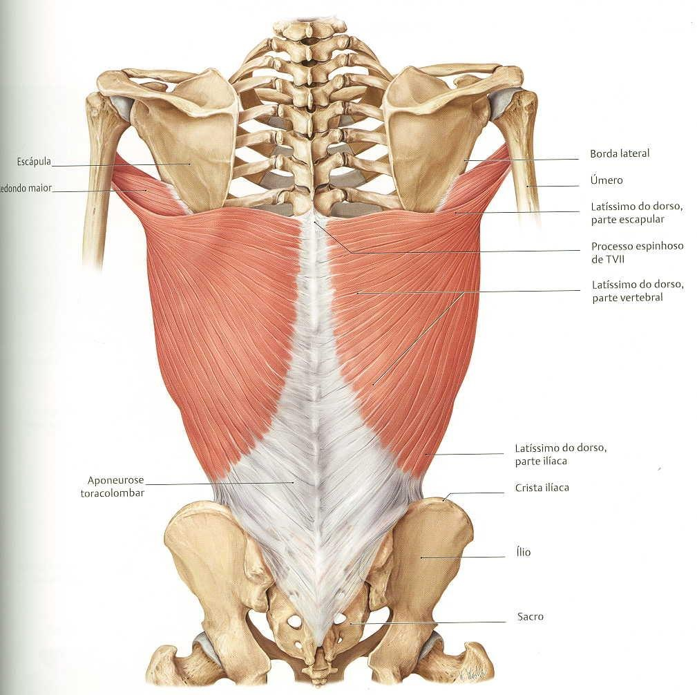
Romboides e levantador da escápula
- Sob o trapézio, entre coluna e escápula: romboide MENOR (ligamento nucal + C7–T1 — fica acima) e romboide MAIOR (T2–T5 — abaixo). Referência prática do professor: a espinha da escápula — do nível da espinha para baixo, maior; acima da espinha, menor.
- Ações: retraem a escápula (aproximam as duas da coluna) e a fixam à parede torácica. O levantador da escápula sai do ângulo superior da escápula para os processos transversos cervicais — eleva a escápula, ajudando o trapézio.
- Inervação dos três: nervo DORSAL DA ESCÁPULA (primeiro raminho do plexo, sai da raiz de C5). Artéria homônima: dorsal da escápula.
- Relembrete da semana passada: quem mantém a escápula grudada no tórax pela frente é o serrátil ANTERIOR — a lesão dele dá a escápula alada.
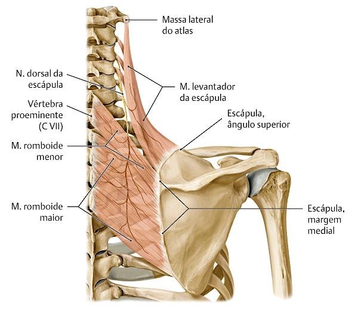
Serráteis posteriores — os extrínsecos respiratórios
- Serrátil posterior SUPERIOR (4 dígitos, sob os romboides): ELEVA costelas. Serrátil posterior INFERIOR (4 dígitos, sob o latíssimo): DEPRIME costelas.
- São músculos respiratórios acessórios — entram em ação na crise asmática/bronquite, quando toda musculatura disponível é recrutada. Vão às costelas (não à escápula): movimento respiratório ⇒ continuam sendo extrínsecos.
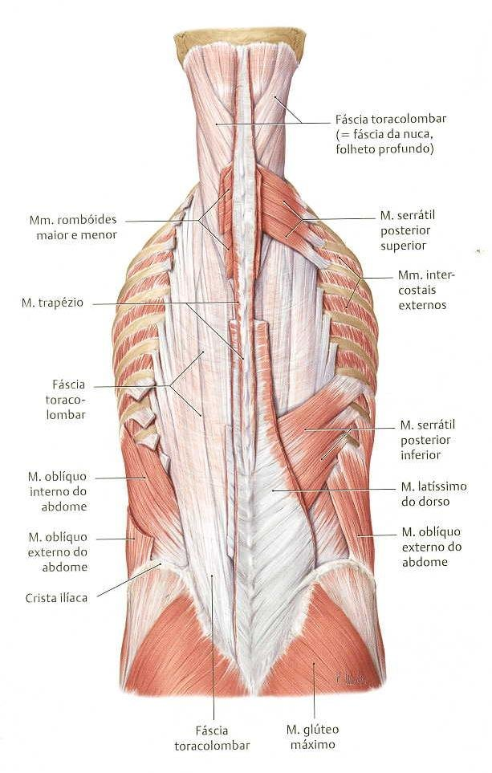
7 · Intrínsecos: esplênios, eretores da espinha e transversoespinais
Agora sim os próprios do dorso: profundos, revestidos pela fáscia/aponeurose toracolombar, responsáveis por postura e movimento da coluna. O corpo precisa deles porque quase todo o peso (vísceras) fica ANTERIOR à coluna — sem essas "hastes" potentes atrás, andaríamos vergados para a frente. Fraqueza aqui = dor, erro postural — por isso fisioterapia/pilates fortalecem exatamente essa musculatura. Inervação de todos: RAMOS POSTERIORES dos nervos espinhais (não é plexo braquial — não é movimento de membro!). Três camadas:
Camada superficial — esplênios ("a bandagem")
- Esplênio da cabeça (vai ao processo mastóide + linha nucal superior) e esplênio do pescoço (para nos processos transversos de C1–C3/C4). Origem: ligamento nucal + processos espinhosos C7–T3/T4. Esplênio = "bandagem/compressa": envolvem e seguram os músculos profundos do pescoço.
- Ação: unilateral → inclina e RODA a cabeça para o MESMO lado · bilateral → ESTENDE cabeça e pescoço.
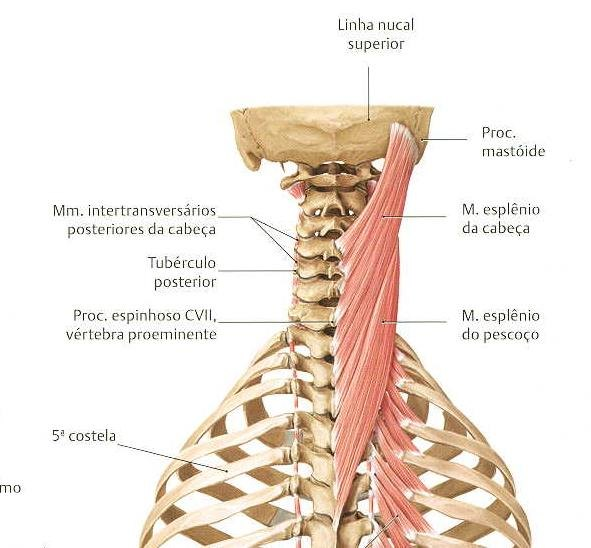
Camada intermediária — ERETORES DA ESPINHA (os principais)
- O principal extensor da coluna: mantém o bípede em pé. Três colunas de cada lado, num sulco entre processos espinhosos e ângulos das costelas, todas nascendo de uma ORIGEM COMUM: tendão largo na crista ilíaca posterior + face posterior do sacro + processos espinhosos sacrais/lombares, revestido pela aponeurose toracolombar.
- De medial → lateral: ESPINAL (colado nos processos espinhosos; é o único que praticamente não chega à cabeça) · LONGUÍSSIMO (intermediário; vai até o processo mastóide) · ILIOCOSTAL (lateral; do ilíaco aos ângulos das costelas). Cada um com 3 partes regionais.
- Ação: unilateral → flexão lateral · bilateral → extensão/hiperextensão da cabeça e da coluna.
🎯 Contrafilé × filé mignon
A analogia que ninguém esquece: os eretores da espinha são o CONTRAFILÉ — no boi (quadrúpede, que não precisa ficar em pé) o músculo é macio; no humano é duro, tenso, "ruim de comer", porque sustenta a coluna o dia inteiro. E o FILÉ MIGNON é o PSOAS MAIOR — também paravertebral, mas anterior à coluna, macio porque não briga com a gravidade. Anatomia de açougue que fixa a função: posterior = postura = duro; anterior = macio.
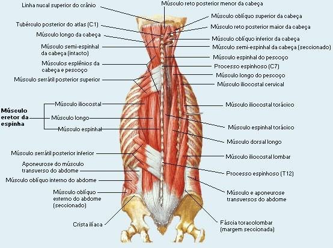
Camada profunda — transversoespinais e os minúsculos
- Sob os eretores, músculos curtos e oblíquos que vão de processo TRANSVERSO a processo ESPINHOSO de vértebras acima — daí "transversoespinais": SEMIESPINAL (continua para cima onde o espinal parou — o semiespinal da cabeça chega ao occipital, entre as linhas nucais), MULTÍFIDO (mais espesso na lombar — o "ajuste fino") e ROTADORES curtos/longos (mais desenvolvidos na torácica).
- Ação dos transversoespinais: bilateral estende; unilateral roda para o lado OPOSTO.
- Completam a camada: interespinais, intertransversários e levantadores das costelas — minúsculos, entre processos vizinhos.
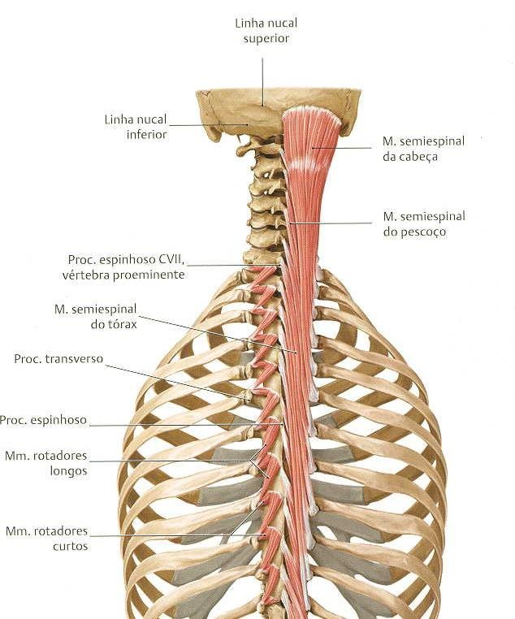
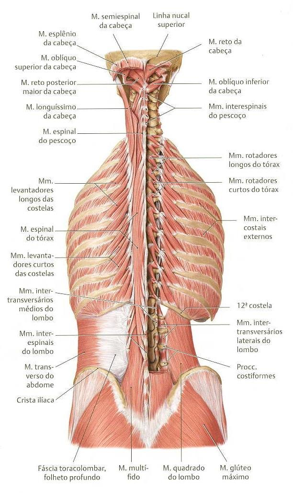
8 · Aponeurose toracolombar: as 3 lâminas
- Os intrínsecos são contidos por uma "armadura" de tecido conjuntivo: a fáscia/aponeurose toracolombar — fina na parte torácica, ESPESSA na lombar (o losango branco visível na dissecção). É o equivalente posterior da bainha do reto do abdome: na frente não há osso, atrás há coluna + esse cinturão.
- Lâmina ANTERIOR: sai da face anterior dos processos transversos lombares, passa na frente do QUADRADO DO LOMBO e continua como FÁSCIA TRANSVERSAL (o revestimento interno do músculo transverso do abdome).
- Lâmina MÉDIA: sai da ponta (extremidade) dos processos transversos, passa atrás do quadrado do lombo e dá origem ao tendão do transverso e do oblíquo interno do abdome.
- Lâmina POSTERIOR: sai dos processos espinhosos (+ sacro e crista ilíaca), reveste os eretores da espinha por trás e dá origem ao tendão do serrátil posterior inferior e do latíssimo do dorso — por isso o latíssimo "nasce" daquela área branca.
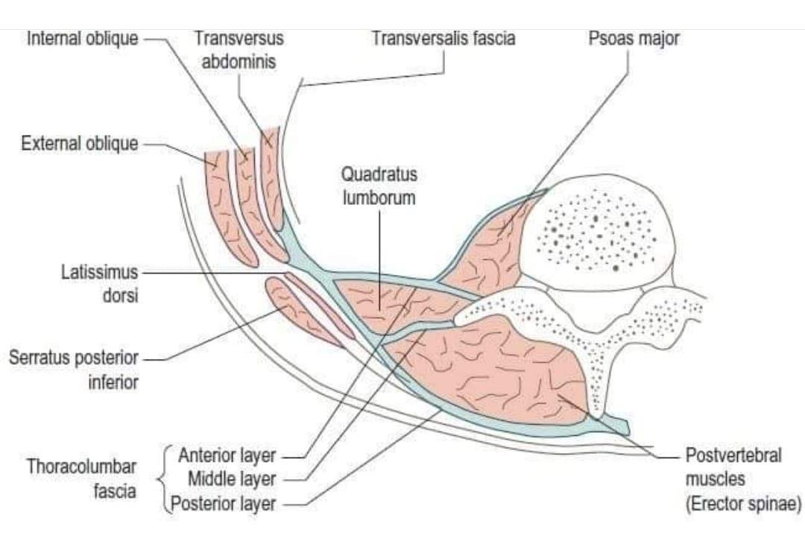
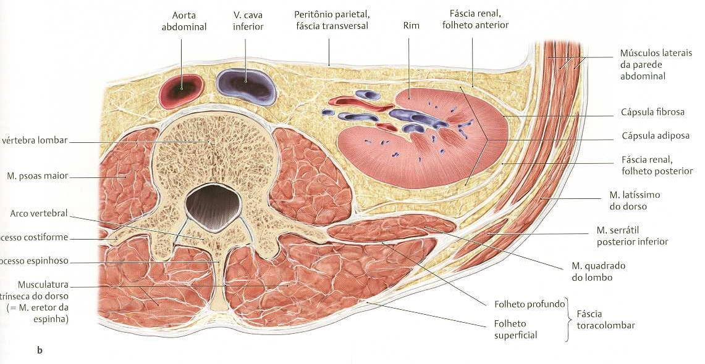
9 · Trígonos: ausculta, Grynfeltt e Petit — e as hérnias lombares
Trígono da ausculta
- Limites: margem superior do latíssimo do dorso (embaixo) + margem lateral do trapézio (medial) + margem medial da escápula (lateral). Assoalho: romboide maior (e a parede torácica logo abaixo). Sem conteúdo próprio.
- É a janela onde o estetoscópio chega mais perto da parede torácica — pouca musculatura e nenhuma escápula no caminho. Manobra clássica: pedir para o paciente cruzar os braços à frente — a escápula desliza lateralmente e o trígono se amplia.
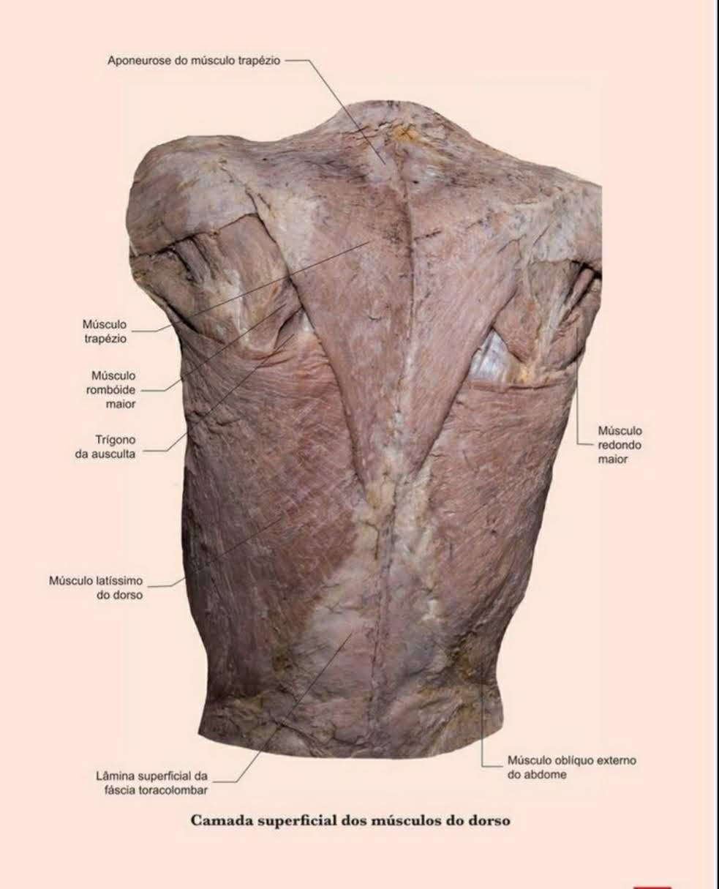
Trígonos lombares — as portas das hérnias
| Trígono lombar SUPERIOR (Grynfeltt) | Trígono lombar INFERIOR (Petit) | |
|---|---|---|
| Referência óssea | 12ª costela (acima) | crista ilíaca (abaixo) |
| Limites | 12ª costela · oblíquo interno · eretores da espinha ou quadrado do lombo | crista ilíaca · latíssimo do dorso · oblíquo EXTERNO |
| Assoalho | fáscia transversal (= lâmina anterior da aponeurose toracolombar) — só fáscia! | oblíquo INTERNO — músculo |
| Teto | latíssimo do dorso (fino, não segura hérnia) | — |
| Hérnia | MAIS comum: hérnia lombar superior / de Grynfeltt | mais rara: hérnia de Petit |
- Por que o superior hernia mais? Porque o assoalho é só fáscia — no inferior há um músculo (oblíquo interno) fazendo assoalho. Detalhe anatômico: conforme a inserção do oblíquo interno, o "triângulo" superior pode virar um quadrilátero.
- Mecanismo: são áreas de fraqueza natural — aumento da pressão abdominal (esforço, evacuação, carregar peso) empurra gordura retroperitoneal (perirrenal) ou vísceras pela falha. Clínica: abaulamento lombar que "vai e volta".
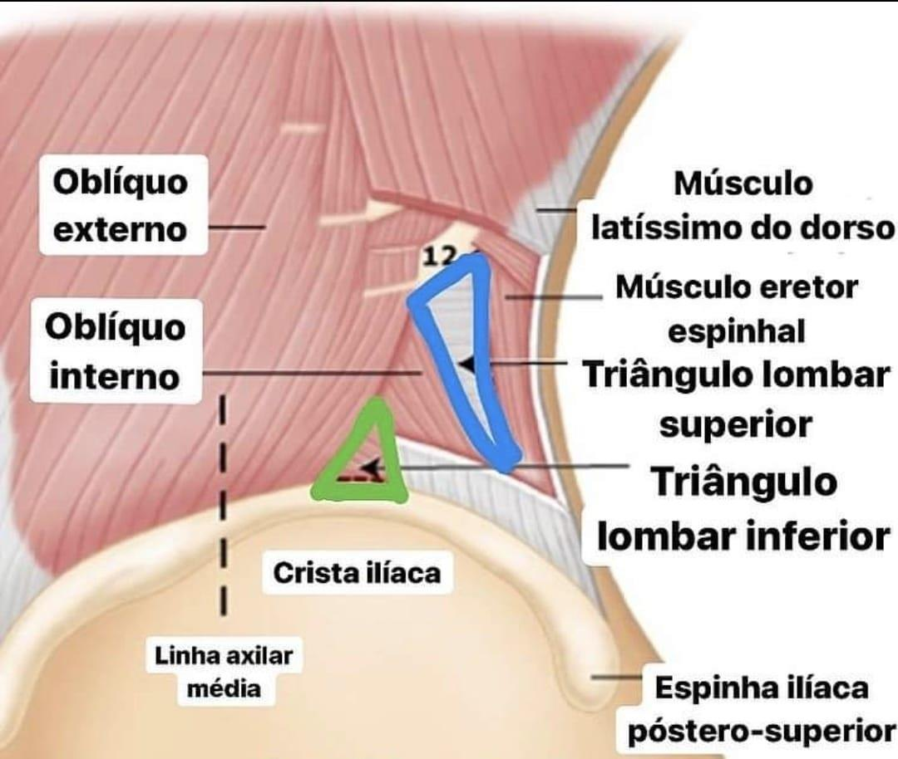
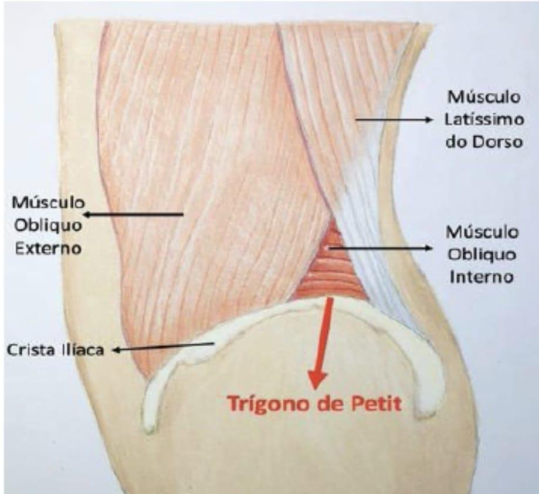
🩺 "Pensei que era lipoma — era hérnia"
Caso do professor: paciente ("sou pedreiro, doutor") com abaulamento lombar que aumentava ao esforço. Na cirurgia, o que parecia lipoma era hérnia lombar com gordura perirrenal saindo pela falha. E a lição de conduta: não adianta só reduzir o conteúdo ou suturar músculo fraco — sutura em músculo fraco abre de novo, e na hérnia de Grynfeltt nem dá para "aproximar costela com músculo". Corrige-se com TELA SINTÉTICA reforçando a parede — o mesmo princípio das hérnias inguinais.
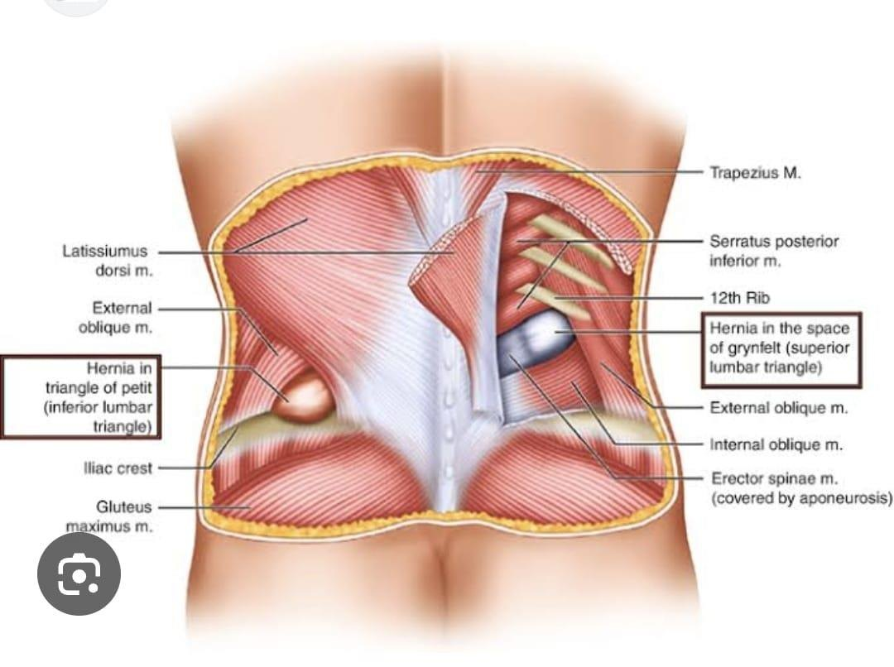
✅ Resumo rápido da aula
- Regiões: nuca · tórax posterior (supra/escapular/infra/interescápulo-vertebral) · lombar · sacral · glútea. Facada na escapular não entra; na infraescapular pode.
- Coluna: 33 vértebras (7-12-5-5-4), 72–75 cm; protege medula, sustenta, flexível; hérnia de disco = cervical e lombar (segmentos que mais movem).
- Suboccipital: 4 músculos (retos posteriores maior/menor + oblíquos superior/inferior) entre occipital e C1–C2; TRÍGONO = reto post. maior + os 2 oblíquos; conteúdo = a. vertebral + n. suboccipital; vertebrais → basilar → polígono.
- Manguito: supra (inicia abdução, mais lesado) + infra + redondo menor + subescapular. Redondo maior FORA. N. supraescapular (tronco sup.) → supra/infra; nn. subescapulares (fascículo post.) → subescapular/redondo maior.
- Extrínsecos: trapézio (descendente eleva/transversa retrai/ascendente deprime; n. ACESSÓRIO XI → ombro caído; a. dorsal da escápula) · latíssimo (adução/extensão/rotação medial; n. e a. toracodorsais; retalho da mama) · romboides + levantador (n. dorsal da escápula; espinha da escápula separa maior/menor) · serráteis posteriores (respiratórios acessórios: superior eleva, inferior deprime costelas).
- Intrínsecos (ramos POSTERIORES dos nn. espinais): esplênios (bandagem; uni = roda p/ mesmo lado, bi = estende) → ERETORES (origem comum sacroilíaca; medial→lateral: espinal, longuíssimo, iliocostal; contrafilé × psoas/filé mignon) → transversoespinais (semiespinal chega à cabeça; multífido lombar; rotadores torácicos; uni roda p/ lado OPOSTO).
- Aponeurose toracolombar: 3 lâminas — anterior (frente do quadrado do lombo → fáscia transversal) · média (atrás dele) · posterior (reveste eretores; origina latíssimo e serrátil post. inferior).
- Trígonos: ausculta (trapézio + latíssimo + escápula; assoalho romboide maior; braços cruzados ampliam) · Grynfeltt (12ª costela; assoalho SÓ fáscia transversal; teto latíssimo; hernia MAIS) · Petit (crista ilíaca; assoalho oblíquo interno; hernia menos). Correção de hérnia lombar = TELA.
🗺️ Resumão Pré-Prova — Dorso
Revisão da véspera · Anatomia Topográfica · Aula 03 · só o que foi enfatizado
- Tórax posterior: supraescapular · escapular · infraescapular · interescápulo-vertebral; depois lombar, sacral, glútea. Facada na escapular NÃO entra (osso); na infraescapular PODE.
- Coluna: 33 vértebras = 7C + 12T + 5L + 5S (fundidas) + 4 coccígeas · 72–75 cm · protege a medula.
- Movimento máximo (e hérnia de disco): cervical e lombar — tórax não.
- 4 músculos entre occipital e C1–C2: reto posterior menor · reto posterior MAIOR · oblíquo superior · oblíquo inferior.
- Trígono suboccipital = reto posterior MAIOR + oblíquo superior + oblíquo inferior.
- Conteúdo: ARTÉRIA VERTEBRAL + NERVO SUBOCCIPITAL. Vertebrais sobem nos forames transversos → forame magno → unem-se na BASILAR → polígono cerebral.
- 4 músculos: supraespinal (INICIA a abdução; o que MAIS lesa) · infraespinal · redondo menor (posteriores) · subescapular (anterior).
- Redondo maior NÃO é manguito (vai direto ao úmero).
- Abdução completa: supraespinal → deltoide → trapézio (roda a escápula p/ passar da horizontal).
- Plexo braquial: raízes C5–T1 → troncos (sup/méd/inf) → fascículos (lat/med/post).
| Músculo | Ação | Nervo | Artéria |
|---|---|---|---|
| Trapézio (descendente/transversa/ascendente — ref. = OMBRO) | eleva / retrai / deprime + roda a escápula | ACESSÓRIO (XI par) | dorsal da escápula |
| Latíssimo do dorso | ADUZ, estende, roda medialmente o úmero (remada; escalada) | toracodorsal (fascículo post.) | toracodorsal (da subescapular ← axilar) |
| Romboides maior/menor + levantador da escápula | retraem / fixam / elevam a escápula | dorsal da escápula (C5) | dorsal da escápula |
| Serráteis posteriores sup/inf | sup ELEVA · inf DEPRIME costelas (respiração acessória) | intercostais | — |
- Lesão do acessório (cirurgia cervical/tumor) = síndrome do OMBRO CAÍDO (trapézio íntegro porém desfuncionalizado, atrofia).
- Romboide maior × menor: referência = espinha da escápula (abaixo = maior; acima = menor).
- Retalhos: trapézio (cobertura cervical) e latíssimo (reconstrução de MAMA) — sempre preservar o pedículo.
- Escápula grudada no tórax = serrátil ANTERIOR (lesão = escápula alada).
- Inervação de TODOS: ramos POSTERIORES dos nervos espinais (nada de plexo braquial).
- Superficial — esplênios (cabeça/pescoço): "bandagem". Unilateral = inclina/roda p/ MESMO lado · bilateral = estende.
- Intermediária — ERETORES DA ESPINHA: origem comum (crista ilíaca + sacro + espinhosos lombares). Medial→lateral: ESPINAL (não chega à cabeça) · LONGUÍSSIMO (chega ao mastóide) · ILIOCOSTAL (ângulos das costelas). Uni = flexão lateral · bi = extensão.
- Profunda — transversoespinais (transverso → espinhoso acima): SEMIESPINAL (continua o espinal; chega ao occipital) · MULTÍFIDO (espesso na LOMBAR) · ROTADORES (torácicos). Uni roda p/ lado OPOSTO. + interespinais, intertransversários, levantadores das costelas.
- Contrafilé = eretores (posterior, duro) · filé mignon = PSOAS MAIOR (anterior, macio).
- Fina no tórax, ESPESSA na lombar (losango branco). "Bainha do reto" do dorso.
- Anterior: face anterior dos processos transversos → FRENTE do quadrado do lombo → continua como FÁSCIA TRANSVERSAL.
- Média: ponta dos processos transversos → ATRÁS do quadrado do lombo → tendão do transverso + oblíquo interno.
- Posterior: processos espinhosos → reveste os ERETORES → origina latíssimo + serrátil posterior inferior.
| Limites | Assoalho | Nota | |
|---|---|---|---|
| Suboccipital | reto post. maior + oblíquos sup/inf | — | conteúdo: a. vertebral + n. suboccipital |
| Ausculta | trapézio (medial) + latíssimo (inferior) + escápula (lateral) | romboide maior | sem conteúdo; braços cruzados AMPLIAM |
| Grynfeltt (lombar SUPERIOR) | 12ª costela + oblíquo interno + eretores/quadrado do lombo | fáscia transversal (SÓ fáscia) | teto = latíssimo; hérnia MAIS comum |
| Petit (lombar INFERIOR) | crista ilíaca + latíssimo + oblíquo EXTERNO | oblíquo INTERNO (músculo) | hérnia mais rara |
- Hérnia lombar: gordura perirrenal/víscera saindo por fraqueza + pressão abdominal; caso do "lipoma" que era hérnia; correção = TELA sintética (ponto em músculo fraco reabre).
| Nervo | Origem | Músculos |
|---|---|---|
| Acessório (XI par craniano) | base do crânio | trapézio |
| Supraescapular | tronco SUPERIOR | supraespinal + infraespinal |
| Subescapulares | fascículo POSTERIOR | subescapular + redondo maior |
| Toracodorsal | fascículo POSTERIOR (entre os subescapulares) | latíssimo do dorso |
| Dorsal da escápula | raiz C5 | romboides maior/menor + levantador da escápula |
| Suboccipital | ramo posterior de C1 | 4 músculos suboccipitais |
| Ramos posteriores dos nn. espinais | — | TODOS os intrínsecos |
- Extrínseco (membro/respiração) ≠ intrínseco (coluna/postura) — serráteis posteriores movem COSTELA, logo são extrínsecos.
- Redondo MENOR = manguito ≠ redondo MAIOR = fora do manguito (nn. subescapulares).
- Trapézio = n. ACESSÓRIO (craniano) ≠ demais músculos do membro = plexo braquial.
- Espinal (não chega à cabeça) ≠ SEMIespinal (continua e chega ao occipital).
- Esplênios rodam p/ MESMO lado ≠ transversoespinais rodam p/ lado OPOSTO.
- Grynfeltt = superior, 12ª costela, assoalho de FÁSCIA (hernia mais) ≠ Petit = inferior, crista ilíaca, assoalho MUSCULAR.
- Serrátil ANTERIOR (fixa a escápula; escápula alada) ≠ serráteis POSTERIORES (respiração acessória).
- Contrafilé = eretores (posterior) ≠ filé mignon = psoas maior (anterior).
Banco de Questões — Dorso
Anatomia Topográfica · Aula 03 · estilo ENADE/residência.